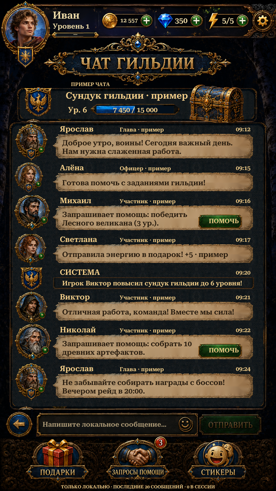

Shared Home header, proportional sample chest progress, original Russian Send/footer lettering and safe-edge controls. Existing source portraits, parchment and native local composer are preserved.
Actual Unity captures below. Chat history, presence and chest progress are examples. Typed messages remain in this local session; nothing is sent to other players. Header routes and Back are functional. English uses live localized text. Fonts, repaired surfaces and reused footer/scenery differ from the original.

Actual Unity Play Mode capture, isolated save and simulated screen/safe area.
Implementation and checks · Remaining differences · Alpha inspection